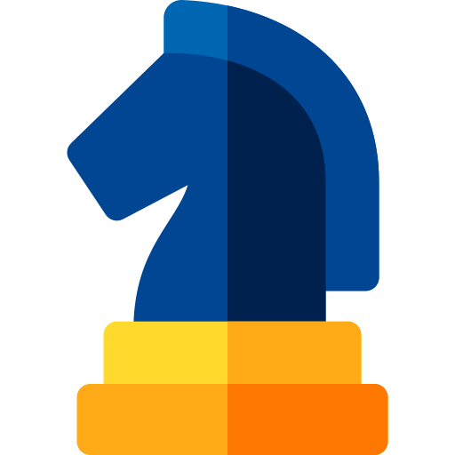
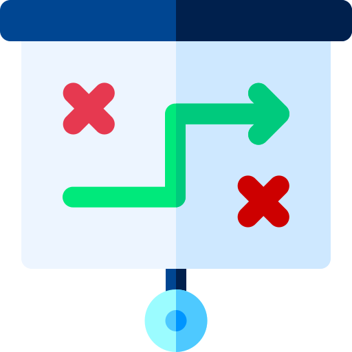

Leroy Merlin
Przeprojektowanie strony internetowej – by zwiększyć jej użyteczność
Analiza UX & UI interfejsu użytkownika oraz jego przeprojektowanie
O firmie
Sieć sklepów budowlanych Leroy Merlin pomaga klientom podczas budowy, remontu czy odświeżania domu. Oferuje produkty budowlane, wykończeniowe, dekoracyjne, do domu i ogrodu.
Projekt miał na celu usprawnienie korzystania ze strony internetowej Leroy Merlin dla klientów.
Zadanie:
Zadaniem było przeanalizowanie i ulepszenie funkcjonalności strony internetowej sklepu Leroy Merlin. Efektem pracy miała być makieta strony internetowej z uwzględnionymi wnioskami z przeprowadzonych badań i analiz. Miala powstać ulepszona strona, która by była prosta i intuicyjna w obsłudze.
Rozwiazanie:
Na podstawie analizy rozwiązań konkurencji, analizy ścieżki klienta Leroy Merlin oraz przeprowadzonych badań ankietowych i wywiadów pogłębionych z użytkownikami strony – zaprojektowano funkcjonalną makietę strony Leroy Merlin. Dodatkowo po testach użyteczności powstałej makiety zaproponowano kolejne ulepszenia.
Moja rola:
Osobiście uczestniczyłam w każdym etapie analizy i projektowania. Moim największym zaangażowaniem było:
- wyłapywanie zalet i wad rozwiązań stosowanych przez konkurencję,
- tworzenie kwestionariusza wraz z jego algorytmem,
- przeprowadzenie testów użyteczności makiet,
- analiza zebranych danych i wniosków.
Tools:
Miro
Axure
Zoom
MS Teams
Google Sheets
Google Forms
Google Docs
Workflow:
Analiza konkurencji
Badanie opinii

Tworzenie person
Design sprint
Prototypowanie
Testy użyteczności
Analiza wyników

Raport końcowy
Czego się nauczyłam:
- Analizować ścieżkę zakupową klienta
- Tworzyć profil typowego klienta sklepu
- Dzielić się wizją i pomysłami z grupą projektową
- Zwracać uwagę na subiektywne postrzeganie informacji, każdy zrozumie inaczej i wyciągnie inne wnioski
- Projektować interaktywną makietę strony internetowej w Axure
- Poznałam 10 heurystyk Nielsena i ich zastosowanie
Co zostało zrobione:
- Analiza sklepu i 5 konkurentów
- Badanie opinii konsumentów
- Tworzenie person
- Design sprint, burza mózgów na temat wyglądu strony internetowej
- Prototypowanie
- Testy użyteczności stworzonego projektu i analiza wyników
- Raport końcowy